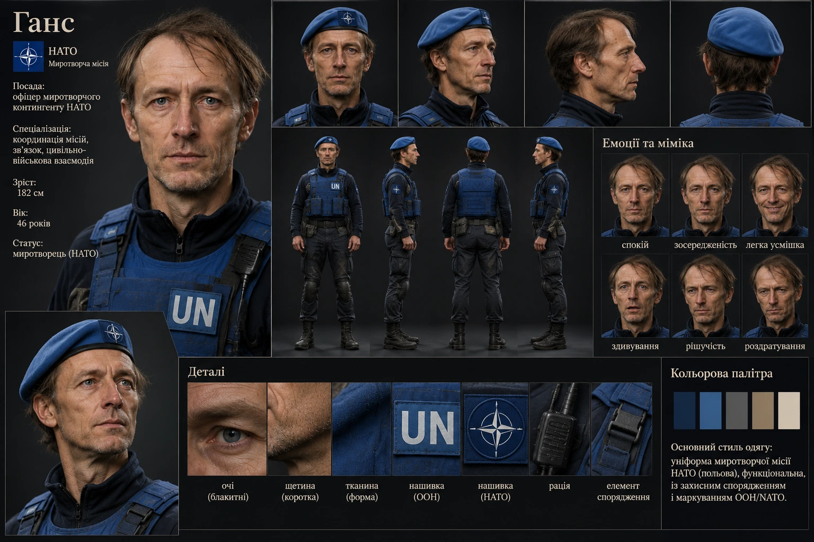

ОСНОВНА ІНФОРМАЦІЯ
Офіцер миротворчої місії
Ганс служить у миротворчому контингенті НАТО. Його робота пов’язана з координацією місій, зв’язком і цивільно-військовою взаємодією.
Вік: 46 років
Зріст: 182 см
Очі: блакитні
Посада: офіцер миротворчого контингенту НАТО
Спеціалізація: координація місій, зв’язок, цивільно-військова взаємодія
Статус: миротворець НАТО